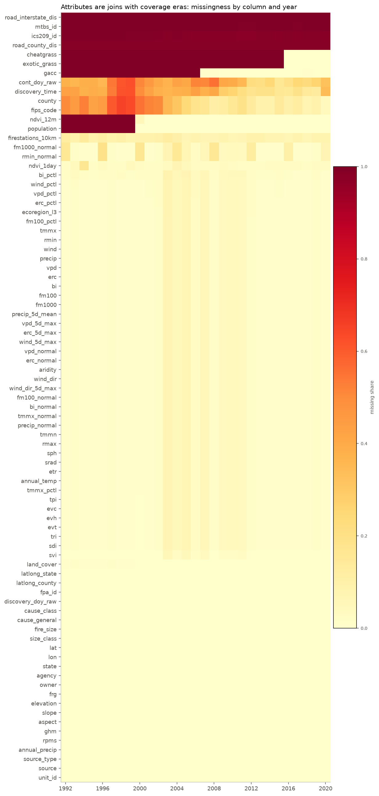
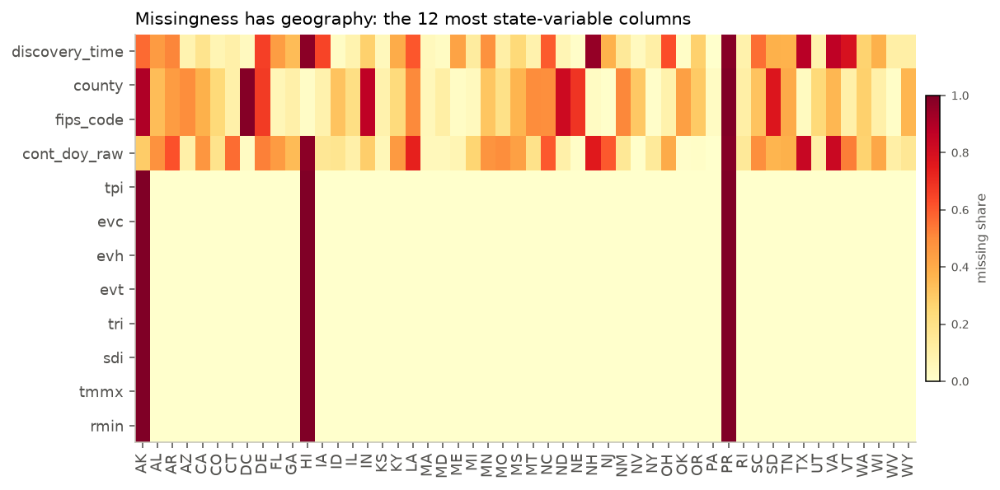
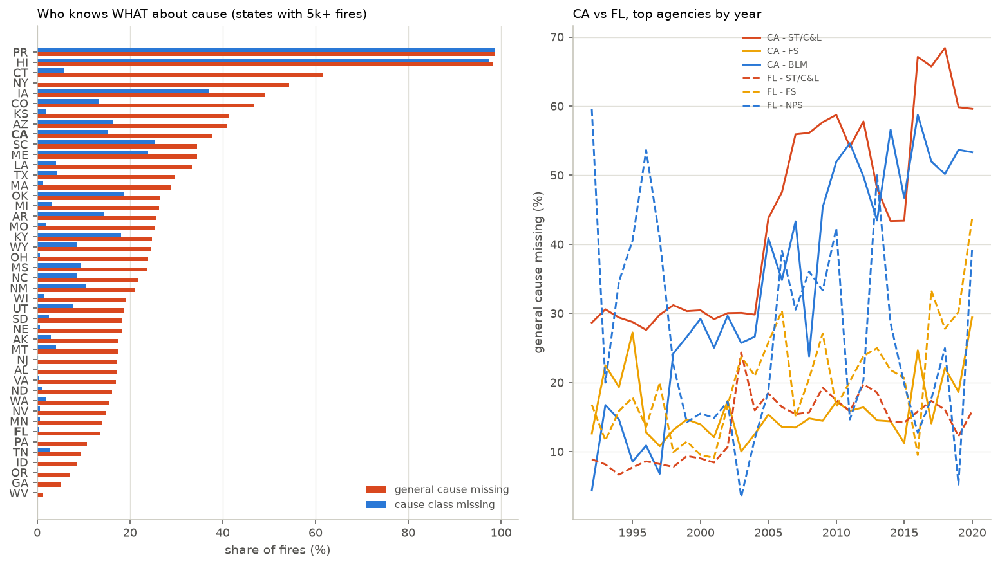
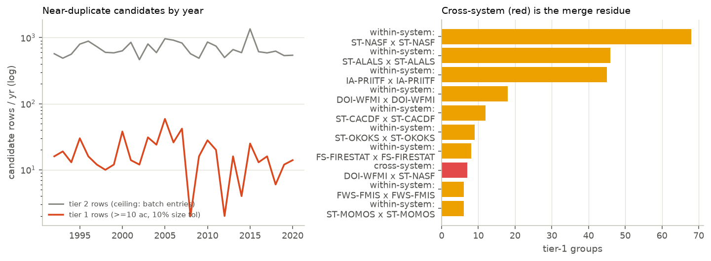
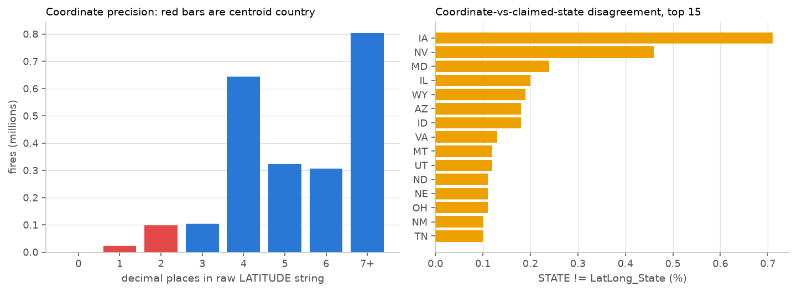
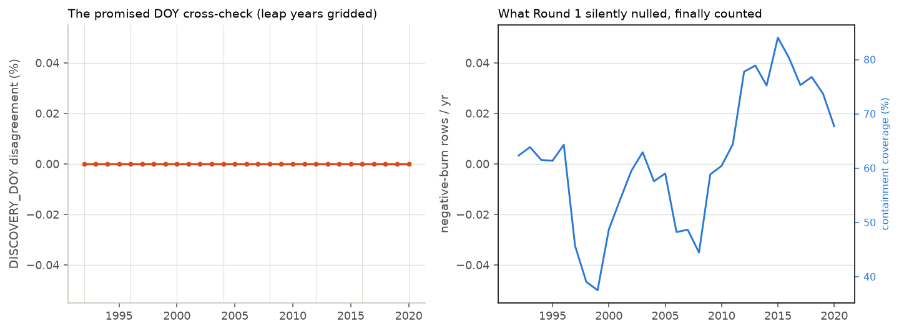
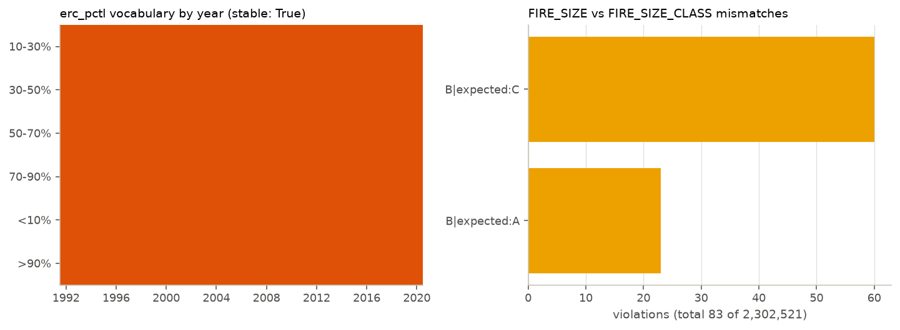

Why the data gets its own article
Round 1 rebuilt my first data science project and told the fire story. But every one of its claims stands on a table nobody had cross-examined, including me.
Return to Fire shipped with real rigor at the model layer: temporal holdouts, spatial blocks, baselines, a verifier that ties every printed number to a results file. The data layer got working engineering (checksums, streamed reduction, fail-loud column discovery) but not a forensic examination. This page is the confession list from that first build, worked through like a data engineer with the whole afternoon:
- The dataset's own
DISCOVERY_DOYwas cached and never cross-checked against our derived day-of-year. - Two columns that could verify coordinates against claimed location
(
LatLong_State,LatLong_County) sat unused. - Zero duplicate detection, on a registry famously merged from federal, state, and
local reporting systems. Even
FOD_IDuniqueness was assumed, not checked. - Missingness was audited for CA and FL only; corpus-wide, nobody knew which attributes were dead where.
- Units lived in my head (the temperature column is in Kelvin; ask the example script that quietly subtracts 273.15).
- The sentinel list, the vocabulary stability of the percentile labels, and the size-vs-class consistency were all unverified assumptions.
Two of these turned out to be live rounds. The "unique" primary key has 64 collisions, and 47,367 rows of Alaska, Hawaii, and Puerto Rico were hiding inside a dataset documented as contiguous-US, sitting unremarked in Round 1's "CONUS" trend series. Both are fixed or fenced below, and the main article has been corrected. The frozen first shot preserves what it said before the audit.
TL;DR
What 29 checks over 4.68 GB actually found
FOUND The primary key lies, 64 times. 64 rows share a FOD_ID with a completely different fire: a reused ID block pairing 2019 Florida records with 2020 Alaska records. Both fires in each pair are real, so deduplication would delete a fire. Documented, not dropped.
FOUND A "CONUS" dataset with 47,367 non-CONUS rows. Alaska (15,195 fires, 36.65M acres!), Hawaii, and Puerto Rico are all present as records. Only their attributes are absent. Round 1's national series silently included Alaska; the trend lab now excludes AK/HI/PR, and the headline survived: burned area still up 2.4× (2.35 vs 2.37 before). The giant-fire trend weakened honestly: +3.1/yr (p=0.027), not +4.2.
CLEAN The clock checks out. The dataset's own day-of-year agrees with its dates in 2,302,521 of 2,302,521 rows. Zero negative burn durations. The percentile-label vocabulary is stable across all 29 years.
CLEAN Coordinates are better than feared. 99.9% agreement between claimed state and coordinate-derived state; only 5.3% of fires carry centroid-grade precision (≤2 decimals), including 2,918 whole-degree points.
FOUND Cause-labeling is an agency behavior, not a data property. California knows a fire was human-caused but increasingly not what kind: general-cause missing runs 37.8% in CA vs 13.5% in FL, and CAL FIRE's specific-cause completeness collapsed after ~2005 while Florida's held. Puerto Rico and Hawaii barely code cause at all (~98%).
GATE The cleaning gate opened and changed 0 rows. One defensive fix (a newly found 32767 nodata sentinel) was applied and proven byte-identical on the caches; everything else failed the pre-registered bar and is documented instead. "Nothing met the bar" is a result worth reporting.
Ingest, engineered
Before auditing the data, audit the download. Every byte in
data/raw/ can now prove where it came from.
The resume design keeps the single-pass md5: on HTTP 206 the existing
.part bytes are re-hashed from disk (cost only on the resume path),
then the stream appends into the same digest. A stream error preserves the
.part as the resume asset; an md5 mismatch destroys it, because
resuming onto corrupt bytes would loop forever. Both paths were exercised live: a
mid-download kill at 3.9 MB of a 121.9 MB file resumed with 206 and verified.
One pass, fifty-nine columns, twenty-nine checks
The audit reads the corpus once, streaming, and accumulates everything: missingness matrices, vocabularies, ID uniqueness, duplicate buckets, cross-field rules.
Each check is a small object with two methods: update(chunk, year)
called as the stream flows, and finalize() returning a plain dict that
lands in data/data_audit.json. Statuses are
pass / info / warn. The audit reports, it never gates; the only thing that stops
the pipeline is an operational failure like missing files or schema drift.
Both are built to validate one in-memory DataFrame. This audit's questions are
cross-file: is FOD_ID unique across 29 files? is a label vocabulary stable across 29 years? The accumulator layer would have to be written either way, and the heavy
frameworks would contribute a dependency chain without contributing answers. The result
contract also matters: verify_claims.py consumes plain JSON, and every
number on this page is enforced against it.
Memory stays flat: chunks stream at 250k rows, per-year duplicate buckets are freed at each year boundary, and the 2.3M FOD_IDs ride along as one 18 MB numpy array. The whole pass runs in about 12 minutes next to the caches it is auditing.
The dictionary that generates itself
Units, missingness, observed ranges, and dead-column flags, all measured from the data by the audit and written into DATA_DICTIONARY.md, never
hand-maintained.
The temperature column is in Kelvin. Round 1 discovered this the classic way: a
display script quietly grew a k_to_f() helper and nobody wrote the
unit down anywhere. That is how unit bugs are born. The Mars Climate Orbiter was lost
for less. The dictionary now flags it loudly, and marks the two columns whose units could
not be verified as UNVERIFIED instead of guessing.
| column | raw name | units | missing (corpus) | note |
|---|---|---|---|---|
tmmx | tmmx | (!) KELVIN | 2.1% | gridMET daily max at the ignition cell |
vpd | vpd | kPa | 2.1% | vapor-pressure deficit |
erc | erc | index | 2.1% | energy-release component |
wind | vs | m/s | 2.1% | daily mean; cannot see gust events |
ndvi_1day | NDVI-1day | unitless | 3.3% | MODIS-scaled |
svi | RPL_THEMES | 0-1 percentile | 1.1% | -999.0 sentinel, masked at reduce |
population | Population | UNVERIFIED | 24.8% | inferred persons/cell; not confirmed |
road_county_dis | road_county_dis | UNVERIFIED | 98.2% | DEAD corpus-wide |
elevation | Elevation | m | 0.0% | 32767 = nodata on non-CONUS rows |
aspect | Aspect | degrees | 0.0% | -1 means flat terrain |
The full table (every cached column, every derived column, every cache file's schema) regenerates deterministically on each audit run:
DATA_DICTIONARY.md.
One postscript from the re-run after cache v2: the dead-column census grew from two to four,
because mtbs_id and ics209_id are
near-empty corpus-wide. They are the same two identifiers the
modeling stage banned as leaks. Empty for small fires and
present for big ones is exactly what makes them dangerous.
Missingness has geography, and eras
Round 1 declared three columns "dead" after checking two states. The full corpus says: dead is a place, not a property.


ndvi_12m is 100% missing in both states Round 1 examined, and only 25.1% missing corpus-wide, nearly complete in Puerto Rico and
New England. Judging a column from two states nearly wrote off usable data. The road-distance
columns, by contrast, really are dead everywhere (98.2% / 99.9%).This table is a fire registry with thirty other datasets joined onto it, each carrying its own coverage window. Every column you plan to trust needs its own where-and-when map, which the audit now produces for all of them, in one pass.
The cause-label mystery
Who knows what about why fires start turns out to be a story about agencies and years, not about fires.
First, the definitions, because the main article quotes three different "missing cause" numbers and they are all correct:
- Class-missing: the record can't even say Human vs Natural
(
NWCG_CAUSE_CLASSIFICATION). National: 8.4%. CA: 15.2%. FL: just 0.4%. - General-missing: the record knows the class but not the 13-way specific cause
(
NWCG_GENERAL_CAUSE). CA: 37.8%. FL: 13.5%. - Group-mappable: what survives into the ML buckets, the 30.8% CA+FL figure the main article reports next to its models.

California increasingly knows a fire was human-caused without recording what kind of human. That is not a random gap: it concentrates in exactly the arson-vs-equipment-vs-debris distinctions the main article's confusion matrix already flags as its weakest. The missing labels and the hard labels are the same labels. Any cause model trained on this registry inherits an agency's filing habits, and now we can see whose.
One fire, two ledgers
A registry merged from federal, state, and local systems should contain double entries. The audit went looking, and found something stranger first.
FOD_ID, the column every join in every downstream analysis would naturally key on, has 64 collisions. Not double-entered fires: different
fires. A contiguous ID block was assigned twice, once to 2019 ICS-209 records in the
Southeast, once to 2020 IRWIN records in Alaska. Deduplicating on the key would delete real
fires. Nothing in this pipeline joins on FOD_ID globally (the Tubbs lookup is year-scoped),
so the fix is a warning label, loudly placed: FOD_ID is not a safe global key.
Then the actual double-entry scan, run with a rule designed not to fool itself:
tier 1 (headline): same discovery date + coordinates within ~110 m (3 decimals)
+ fire size >= 10 acres + sizes within 10% + different FOD_ID
tier 2 (ceiling): same date + place + EXACT size, any size -- dominated by
legitimate batch-reported small burns; a bound, not a count

Disposition, pre-registered before the scan ran: flag, never drop. A deduplication pass would alter the trend inputs on the strength of a heuristic, without adjudicating which record is authoritative. At 548 candidate rows against 2.3M, the honest move is a documented rule and a documented count, and leaving the ledger alone.
Coordinates under the microscope
The audit reads latitude as a string before it reads it as a number, because the number of decimal places is data about the data.

Two practical consequences flow into the other analyses. First, the near-duplicate scan rounds to 3 decimals because the precision histogram says that's where real coordinates live. Second, the centroid tail is exactly why Round 1's maps aggregate to 0.1° cells instead of trusting individual points, a choice made on instinct then and on evidence now.
The coordinate range check is also what unmasked the non-CONUS rows: 47,367 fires with latitudes and longitudes politely outside the lower-48 bounding box, in a dataset whose paper says contiguous US. Alaska, Hawaii, and Puerto Rico ride along as records with empty weather and 32767-filled terrain. That single range check triggered the scope correction described in What changed.
Time and vocabulary integrity
The checks most likely to embarrass the source came back cleanest, which is itself worth publishing.

doy_std differs by design: it shifts post-February days in leap years so
seasons align.) Right: zero negative burn durations exist; 232 fires ran past 400 days and
stay excluded from burn_days; containment dates exist for 61% of rows and coverage
climbs over the record.
What the audit changed
The gate was written before the findings existed. Here is the rule, verbatim, and every finding's fate.
A finding may change the caches only if (a) the fix is a deterministic, mechanical correction of an objectively impossible value, with no judgment calls; (b) it touches <0.1% of rows or provably cannot change a Round-1 verdict; and (c) it lands as a small, printed-count step in the reduce script. Everything else is documented, not fixed.
| Finding | Decision | Rationale |
|---|---|---|
| 32767 nodata fill in terrain columns | APPLIED | Added to the sentinel list. Provably cosmetic today: the reduce re-ran and all eight data caches came back byte-identical (SHA-256 for SHA-256), because no lower-48 row carries the fill; the only two files that changed are reports whose embedded generation timestamps moved. The gate opened, changed 0 rows, and proved it. |
| AK/HI/PR rows in the "CONUS" data | APPLIED | Analysis-scope fix, not a data fix: the trend lab now excludes AK/HI/PR from CONUS series (matching the WFIGS comparison scope exactly), and the main article's scope claims were corrected. Three numbers shifted; the 2.4× headline survived. |
| 64 FOD_ID collisions | DOCUMENTED | The colliding rows are different real fires; dropping either deletes history. Rule (a) fails. Warning label instead: FOD_ID is not a safe global key. |
| 548 tier-1 near-duplicate rows | DOCUMENTED | Pre-registered flag-only: dedup would alter trend inputs without adjudication. |
| 83 size-class boundary mismatches | DOCUMENTED | Rounding at bin edges, not corruption; 0.004% of rows. |
| 1,374 state-boundary coordinate disagreements | DOCUMENTED | Border fires legitimately cross lines; a mismatch is not an error. |
| 232 burn durations > 400 days | DOCUMENTED | Already excluded from burn_days by design; now counted in public. |
Final tally: 0 rows of cached data changed. The two applied fixes were a defensive sentinel (proven zero-diff) and an honesty correction to what the analyses claim about their own scope. That is what a cleaning gate is for. Most findings should die at the bar, and the ones that pass should leave receipts.
Reviewed before handoff
Before the modeling stage begins, the data stage got a closing code-and-claims review: a cold re-read of every audit module, targeted probes of the things I had asserted but not proven, and a formal handoff contract. One finding changes how the models must be read.
The finding that matters: label-selection drift
The main article reported that cause labels are missing for 15.2% of California fires and that excluded rows "sit out." That is true, and incomplete. Cut by the ML temporal splits, the exclusion is a gradient, not a constant:
| Split era | CA class-label missing | CA 7-class label missing | Natural share of labeled | FL class-label missing |
|---|---|---|---|---|
| train ≤2014 | 10.1% | 33.9% | 14.3% | 0.4% |
| val 2015–17 | 29.1% | 50.1% | 17.1% | 0.3% |
| test 2018–20 | 41.7% | 56.5% | 9.8% | 0.6% |
The cause models' test years evaluate on the fires California still labels, a subset that shrank from 90% to 58% of ignitions and shifted composition (the natural share of labeled fires dropped by a third). This does not invalidate label-conditional evaluation, but every modeling-stage claim must carry it, and comparisons across eras must weight for it. It is the direct downstream consequence of the agency filing collapse. The audit's forensics and the models' caveats are the same fact seen twice. The main article's model section now states the gradient.
Everything else the review checked
| Item | Outcome |
|---|---|
| WFIGS complex-child filter, asserted in Round 1 and never proven to bite | verified filtered vs unfiltered differ exactly where complexes exist (CA 2021: 35 vs 38 fires, 2.18M vs 2.48M acres; the 0.3M gap is the double-count it prevents) |
| Near-duplicates inside the ML caches | quantified 56 tier-1 rows in the CA cache, 10 in FL, negligible and now joinable: the audit ships a
dup_flags.parquet sidecar so the modeling stage can run
with/without-flag sensitivity checks without any row ever being dropped |
| Feature contract lived buried in the ML script | promoted the at-ignition feature list, the named leak
exclusions, and the split boundaries now live in the data module
(wildfire.py) as the stage's formal handoff, echoed into
eda_results.json |
| Vocabulary-span figure assumes label-year contiguity | documented exact for the stable vocabularies it charts; would overstate presence for a label that skipped years |
| Text tooling hazard | documented Windows PowerShell 5.1 text round-trips corrupt these UTF-8 pages (it mangled two em-dashes during verifier testing, caught and repaired); all page edits now go through Python |
The handoff contract
What the modeling stage inherits, by name: 30 numeric + 3 categorical at-ignition
features (the dead columns already excluded; the modeling stage's foundry adds a fourth
categorical, evt, from the cache-v2 columns, so its 34-feature base rung is this contract plus that one), five banned post-outcome columns
(fire_size, size_class,
burn_days, agency,
owner), a list the modeling stage later extended by name with
has_mtbs and has_ics209, the
metadata-shaped leaks its §10 demonstrates; frozen split boundaries (train ≤2014 · val
2015–17 · test 2018–20), hash-locked caches, the duplicate-flag sidecar, and
the label-drift table above as a mandatory caveat. Stage documents so far:
the frozen first shot → this audit →
the modeling stage → the main report
that collects what survives.
One thing the modeling stage found that belongs here: this audit hunted sentinels as strings and missed one hiding as a magnitude. The human-modification column carries float32-max (3.4×1038) as its nodata fill on 367 California rows, and it was already feeding the models. A sentinel census has to cover both.
Reproduce it
The audit needs the raw corpus (one scripted download); this page's numbers are
verifiable offline against the committed data_audit.json.
python fetch_raw.py --yes # 4.68 GB once (skip if data/raw/ exists)
python fetch_raw.py --verify-only # re-hash everything vs Zenodo: 30/30 OK
python run_data_audit.py # one ~12 min pass -> data_audit.json,
# 7 audit figures, DATA_DICTIONARY.md
python verify_claims.py # every number on all three pages == the JSONs
Limits of the audit itself: it can only interrogate what the registry recorded. A fire never reported is invisible to every check here. The near-duplicate rule is a heuristic with a deliberately quarantined ceiling. Coordinate-vs-state disagreement includes legitimate border fires. Cause-completeness measures filing behavior, which is evidence about agencies, not about arsonists. And an audit run by the same person who built the pipeline shares that person's blind spots. The checks are in the repo so someone else can add one that embarrasses me.